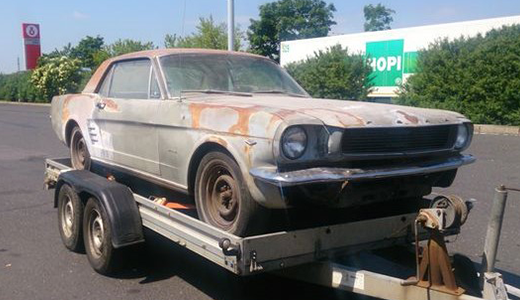
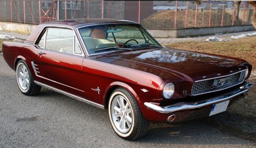
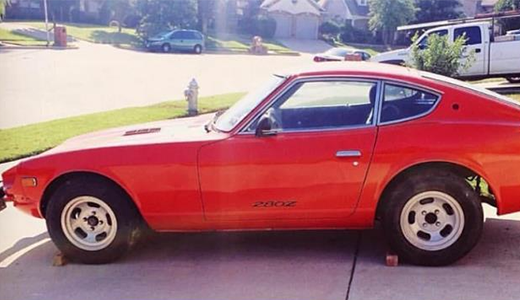
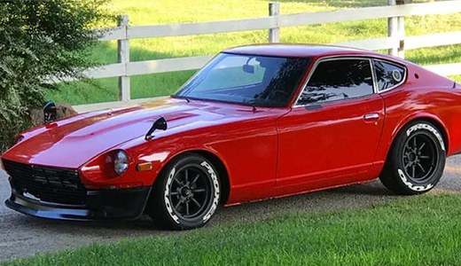
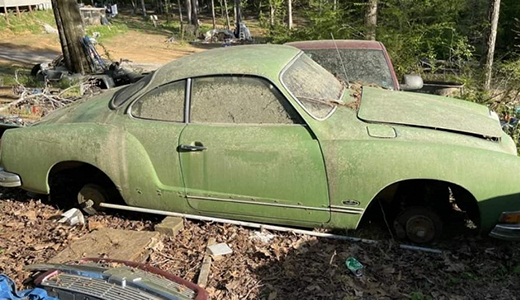
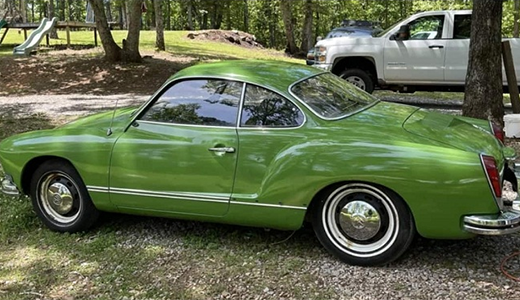
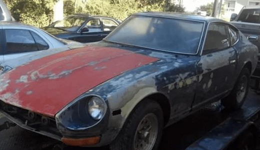
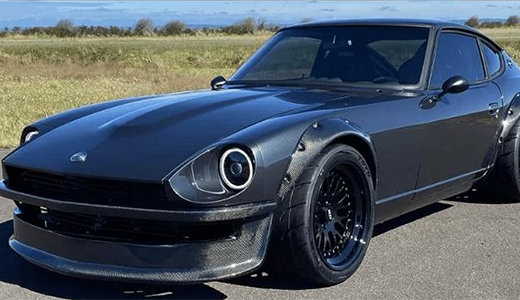
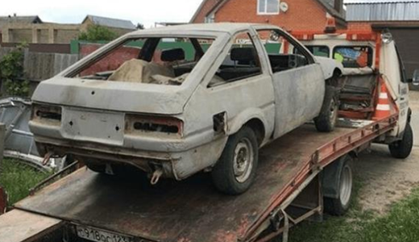
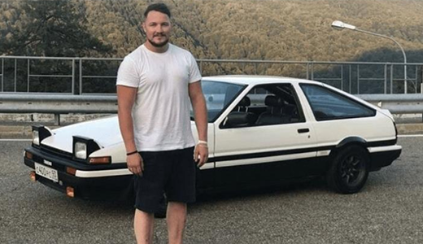

1966 Ford Mustang Restoration
The restoration focused on preserving its iconic look so we placed a meticulous attention to detail on this one.
Our rescue of this 1966 Ford Mustang features a fresh paint job, restored original parts, upgraded rims, tires, and significant engine
and interior refurbishments.
The interiors were also sewn anew and treated by professional leatherworkers.
.
"Hey, this is too cool! My 1966 Mustang looks better than it did on the day it rolled off the assembly line. Greased lightning, baby!"
- Danny Zuko
1977 Datsun 250Z Restoration & Upgrade
The plan with the 1977 Datsun 250Z restoration was to highlight its original color with a super polish,
adding modern bumpers for a sleek touch. We cleaned the Engine and repair the transmission. Interior refurbishments ensured both performance and modern comfort.
We paid close attention to the engine, conducting necessary repairs and tune-ups to ensure smooth running. Additionally, we replaced worn-out suspension components and upgraded
the braking system for improved handling and safety on the road.
Inside, we focused on fixing electrical issues and refreshing the upholstery, making the driving experience more enjoyable for years to come.
" "
"I'm stoked with the transformation! My 1977 Datsun 250Z looks better than ever, keeping its original badass look with a modern twist."
- Johnny Lawrence
Volkswagen Karmann-Gia Restoration
The restoration of the Volkswagen Karmann-Ghia involved comprehensive mechanical and cosmetic work.
We addressed grave engine issues, including a thorough tune-up and replacement of worn-out engine. These cars are not considered safe nowadays. Therefore, suspension and
steering systems were replaced too for overll performance, while brake upgrades ensured safety on the road.
Exterior work included a fresh paint job and rust repairs. The whole interior was refurbished.
" "
"I'm absolutely delighted at the transformation! My Volkswagen Karmann-Ghia not only looks beautiful and drives like a dream. The detailed mechanical work brought it back to its glory days."
- Carl Fredricksen
Nissan Z S30 Restoration
Restoring the Nissan Z S30 required hands-on mechanical expertise. We addressed engine issues by replacing worn-out pistons and valves, ensuring smooth operation.
Suspension upgrades included installing stiffer springs and sway bars for better cornering. Safety enhancements involved fitting high-performance disc brakes and replacing aging brake lines.
Additionally, we revamped the exhaust system for improved performance and a sportier sound.
Also, an extensive rust treatment was performed, along with a panel alignment and addressed any dents and imperfections,
resulting in a sleek and polished exterior.
A fresh coat of paint was applied using high-quality materials, bringing out the car's original shine and enhancing its overall appeal.
" "
 "Oh hi, Car Restoration Team! You guys are tearing me apart with how amazing my Nissan Z S30 looks now. Thanks a lot, you're my favorite restoration team!"
- Tommy Wiseau
Toyota AE86 Restoration
Taking on the restoration of the Toyota AE86 was no small feat. The car arrived in a dire state, resembling little more than a desert relic. With no paint, engine, lights, windows,
or functional interiors, it was practically a built-a-new car project rather than a revival. Our team was determined bring life back into this forgotten car. We rebuilt the engine,
sourced and installed missing components, repaired rust damage, and restored the interiors from scratch.
A fresh coat of paint and new lights completed the transformation, turning this once-abandoned carcass into a shining example of automotive resurrection.
" "
 "Uh ... It's 10:33... I need to pick up my car."
- McLovin